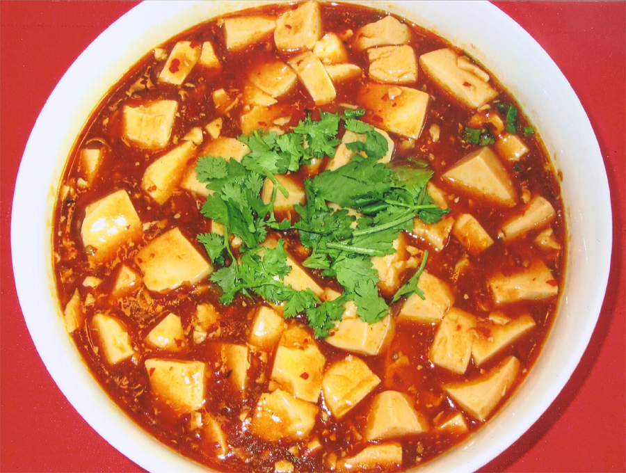

Tofu in Restaurants
For tofu novice, the best way to explore tofu in its many diverse forms is to taste tofu dishes at well-regarded Chinese restaurants. Most restaurants offer at least a few popular tofu dishes such as Mapo Tofu or Family Style Tofu. In a more upscale restaurant in Chinatown, you can find larger selections of tofu dishes with sometimes up to 20 varieties on the menu.
Let us start here with Mapo Tofu since it has earned a good reputation in the West. Originally from Chengdu, Sichuan, this dish had a rather humble beginning. As legend has it, a widow named Mapo cooked tofu with ground meat in a heavily seasoned sauce for the poor wayfaring laborers just to make a living. How this lowly dish was somehow elevated to a world-renowned fame is an intriguing story in itself.
If you are a fan of Mapo Tofu you’ll know that this mouthwatering tofu dish, eaten with rice, is just heavenly. Even without the ground meat, soft tofu encased in a pool of robust spicy bean sauce is tempting enough for you to order it again and again.